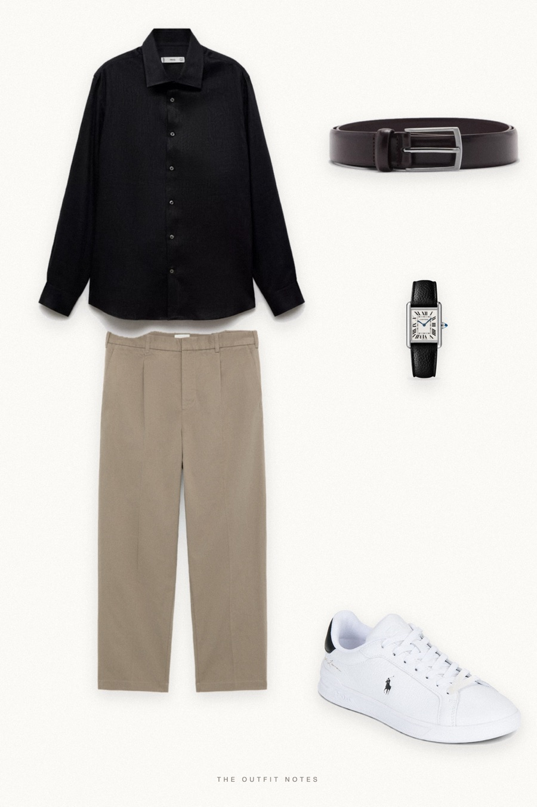
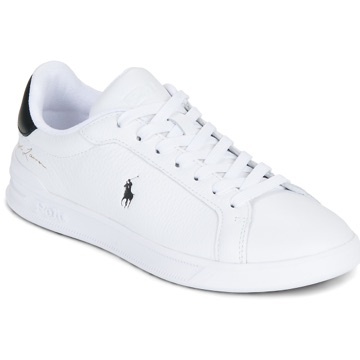

Hamptons Fall
open-collar navy linen, stone-toned trousers

Quiet luxury men's early fall outfit: an open-collar navy linen shirt with sleeves rolled, loose taupe cotton trousers, white leather sneakers, a dark leather belt and a Cartier Tank Must. Stealth wealth for a Hamptons weekend, a yacht deck or a long lunch. Succession style men, no logos.
The pieces
This page contains affiliate links: if you buy through them, we may earn a commission at no extra cost to you. Disclosure.
 Mango
Mango
Navy linen shirt
Shop ARKET
ARKET
Taupe pleated loose-fit trousers
Shop
Polo Ralph Lauren
White leather court sneakers
Shop Mango
Mango
Slim dark-brown leather belt
Shop Cartier
Cartier
Tank must watch
Shop
Prices are indicative, taken when the look was published, and may have changed. Pictures of the outfit are AI-generated illustrations of real products; the product photos are the retailers' own.
Published 1 October 2026.